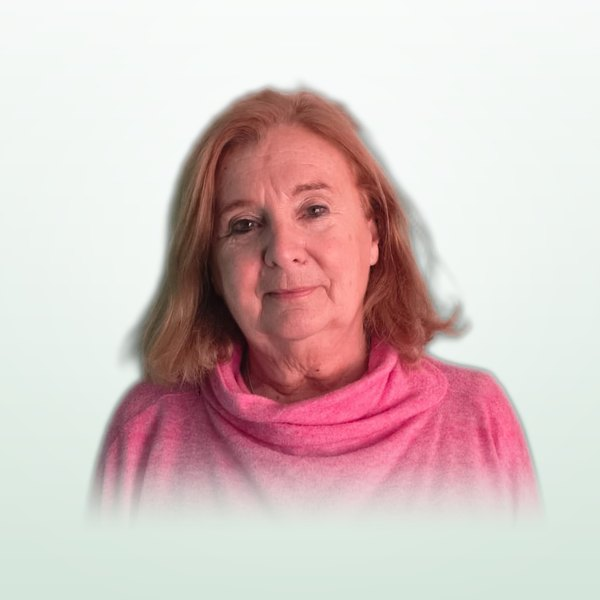

Monica Patricia Rizzo Candidata Lista n. 3
Avvocata e mediatrice · Presidente della Federazione delle Società Italiane di Mar del Plata e zona
Professoressa associata di Teoria generale del diritto presso la Facoltà di Giurisprudenza della UNMDP. Ha fatto parte del COM.It.Es. per tre mandati ed è membro del Consiglio Direttivo dell’Associazione Emilia-Romagna di Mar del Plata.
Leggi la scheda completa
Formazione e docenza
- Professoressa associata di Teoria generale del diritto, Facoltà di Giurisprudenza (UNMDP).
- Membro del corpo docente della Fondazione di Scienze Giuridiche e Sociali dell’Ordine degli Avvocati della Provincia di Buenos Aires (CIJUSO), nel corso di Formazione di base in Mediazione.
- Specializzazione in Metodi Alternativi di Risoluzione dei Conflitti (UNMDP e Ordine degli Avvocati, 1996).
- Dottoranda con la tesi “L’ambito di validità della circoscrizione elettorale estero italiana. Analisi dal punto di vista della teoria del diritto”.
Radici italiane
- Cittadinanza italiana registrata nel Comune di Castelvetro (Modena), Italia.
- Regioni Emilia-Romagna e Piemonte (Bagnasco, Cuneo).
Attività nella collettività italiana
- Consultrice della Regione Emilia-Romagna: 1991-2010 (Consulte 3, 4, 5 e 6).
- Membro del COM.It.Es. nei periodi 1997-2004, 2004-2015 e 2015-2021.
- Membro del Consiglio Direttivo dell’Associazione Emilia-Romagna Mar del Plata.
- Presidente della Federazione delle Società Italiane di Mar del Plata e zona.